Workflow Step Task Types
 The Workflow object is the legacy process model used in early versions of Process Director. BP Logix recommends the use of the Process Timeline object, and not the Workflow object. The Workflow object remains in the product for backwards compatibility, but doesn't receive any new functionality updates, other than required bug fixes. No new features have been added to this object since Process Director v4.5. All new process-based functionality is solely added to the Process Timeline.
The Workflow object is the legacy process model used in early versions of Process Director. BP Logix recommends the use of the Process Timeline object, and not the Workflow object. The Workflow object remains in the product for backwards compatibility, but doesn't receive any new functionality updates, other than required bug fixes. No new features have been added to this object since Process Director v4.5. All new process-based functionality is solely added to the Process Timeline.
Users are assigned a task when they are added to a Workflow Step. A context sensitive web page or Form is displayed that is specific to the task type when the user selects the entry in their Task List, or the link in their email notification. Each task type defines a set of functions or actions that can be performed, as well as custom instructions for the participants.
 If your process includes tasks for unauthenticated users, please refer to the documentation on Anonymous Users for special concerns that may apply to some settings.
If your process includes tasks for unauthenticated users, please refer to the documentation on Anonymous Users for special concerns that may apply to some settings.
The Workflow engine embedded within Process Director supports the following tasks:
User Task #
The user task is any actionable item assigned to a user. If a user task has been assigned to a user, a Task will appear in their Task List. They must complete the task before it can be removed from the Task List. A user who is assigned a task will be automatically given permission to any object in the Workflow package so they may complete the task. Examples of this task can be an approval task or update task.
When a Workflow Step is assigned to a user with an invalid UID or user ID, Process Director will immediately stop the process, and place the Workflow Step into an error state. This is also true for anonymous user assignments if the email address isn't a valid format (Process Director can't validate the email address itself, only the format).
Participants Tab
A user step in the Workflow can have participants assigned to it. Some Workflow Steps can run without any users (e.g. Form Actions, Parallel Tasks, Sub Workflow, etc.).
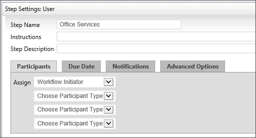
Assign
A user step can assign participants by user, group, From Form Field, Business Rule Value, and the Workflow Initiator. Any number of users can be assigned to a task.
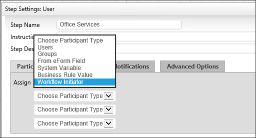
Due Date
Each step in the Workflow can have unique time limit/due date options. Process Director runs as a virtual directory in IIS and processes all time related events like due dates when Activity is present on the system (e.g. a login). To force this Activity checking more often, you can schedule a command in the bputil.exe utility.
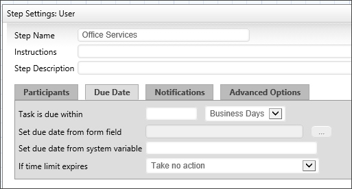
Task is Due Within
This specifies a due date for this step. The step due date is optional. If a step doesn't complete by the due date specified it can automatically transition to the next step in the Workflow. The due date can also be used to prioritize items in a user’s Task List.
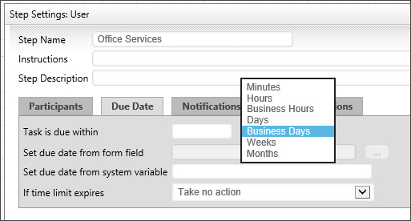
Set Due Date to Form Field
This will allow the user to specify a due date on the form using a Date Picker for that step in the Workflow process
If Time Limit Expires
If the time limit (due date) passes before this step is complete these are the actions that can be taken.
|
Take no action
|
This lets the step continue running.
|
|
Cancel the Step
|
This will cancel the step and automatically advance to the next step in the Workflow.
|
| Cancel the entire Workflow |
This will immediately cancel the Workflow. |
|
Add These Users from Business Rule
|
This will add users identified in the Business Rule.
|
|
Replace with These Users from Business Rule
|
This will add the user from the Business Rule and cancel any running users.
|
|
Jump to Workflow Step
|
This will cancel the step and automatically jump to the step Name that is specified
|
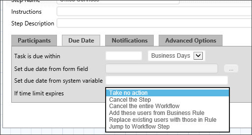
Notifications Tab
Each step in the Workflow can have unique notification options.
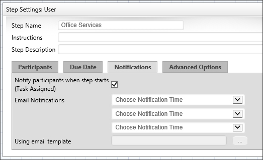
Notify Participants When Step Starts
This will allow the Workflow to notify all users that have been assigned from the Participants tab.
Notify
This will allow you to select a user or users from various places in the Workflow and form to notify in that current step. Once you have made your selection you'll have to select from the Choose Notification Time. You have up to three selections to notify.
You can tell the step how to determine what users to notify with the following options:
Notification Time
- When step starts.
- When step completes.
- When users complete: You can choose specific users or groups whom you wish to complete the task prior to notification.
- When step is past due date.
You may also choose various reminder times, to send notifications a varying number of days before or after a task is due. Sending these reminders are useful for creating escalation notifications, or notifying managers that tasks are slipping past due dates.
Notify Type
- All Active Users in Step: this will send a notification to all users who have yet to complete a user step
- All Users in Step: this will notify all the users involved in this User step.
- Users: this allows you to select specific users to notify.
- Groups: this will notify all users in a specific group.
- Business Rule Value: this will notify the user result of a Business Rule.
- Workflow Initiator: this will notify the initiator of this Workflow instance.
- From Form Field: this will notify a User specified by a form on the container Form.
- External Users: this will send a notification to a specified email address.
Using Email Template
This is an optional email template to use when sending email notifications to users in this step. If this isn't specified, the default email template will be used that is shipped with Process Director. For more information on email templates refer to the section named Using Email Templates in this guide.
Advanced Options Tab
Depending on the task type for the step different options will be available. Some of these options will appear under the Advanced Options tab, others will appear under a tab that is unique to the task type.
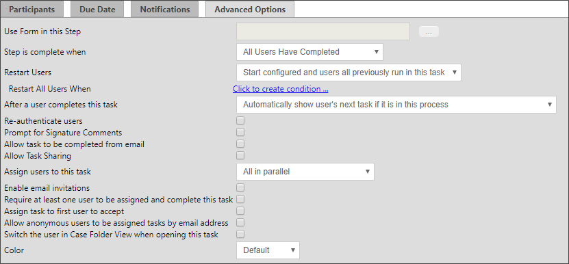
Use Form in this Step
This will allow you to specify a Form to use in this step. This controls the form displayed when a user opens their Task List.
Step is Complete When
This will allow you to select when the step is complete. You can choose when “All Users Have Completed”, “First User Completes Task”, or “When any branch condition is met”.
Restart Users
This option determines how participants are assigned to the step when it must be restarted. This is particularly relevant when an implementer changes the participants assigned to an Activity in the Workflow definition. An existing instance may have been created when different participants were configured to participate in the task. This option enables you to determine how to handle user assignments when the configured users have changed.
It is also important to note that the term "restart" is used for both:
- Cases in which a running task is restarted while the task is still running, and
- Cases in which a task has already been completed, but must be re-run, as in an iterative process, or as a result of a change to some condition.
In either case, the Restart Users options you select will be applied.
The following options are available:
|
Start only configured task participants
|
This option will assign the task to the currently configured users, irrespective of which users may have been previously assigned to the Activity.
|
|
Start configured and users all previously run in this task.
|
By choosing this option, you ensure that both the currently configured users, as well as any users who were previously assigned the task, are assigned the task.
|
|
Start only users that previously completed this task
|
This option will assign the task only to users who completed the task when it was previously run for this instance. Those users will be re-assigned the task irrespective of whoever is currently configured for task assignment in the Workflow definition.
|
|
Start from last completed user
|
If multiple users are assigned to the Activity instance, this option will re-assign the Activity to the last user who completed it when it was initially run.
|
|
Start users that did not complete previously
|
If multiple users are assigned to the Activity instance, this option will assign the task to users who did not previously complete it. For instance, if the Activity uses a round-robin assignment, the Activity will be assigned to one of the users who were not assigned it on the initial run.
|
Restart all users when
This option enabled you to define a condition, or set of conditions under which all users in this task will be reassigned.
After a user completes this task
This option determines how a user's tasks are displayed when a user is assigned two sequential tasks in a process. The default in Process Director is to automatically show the user's next task if it is in the current process.
For example, if a user completes a task in a Form, and is also assigned the next task in the sequence, once the user clicks the OK or other task completion button on the Form, the Form won't close, but will simply redisplay itself to allow the user to complete the next task in the sequence. For various reasons, you may wish to override this behavior, in which case the Form will close once the first task has been completed, and the user will have to re-open the Form to complete the next task in the sequence.
You have the following options for configuring the behavior of Process Director:
|
Automatically show user's next task if it is in this process
|
This is the default behavior, and will automatically redisplay the Form once the user completes the first task in the sequence.
|
|
Automatically show user's next task if it is for this step in a different process
|
This selection will automatically show the user's next task if the user is assigned a task in another process. For instance, if the current task starts a subprocess, and the user is assigned a task in the subprocess, the subprocess task will automatically be displayed.
|
|
Do not show the user's next task
|
Once a user completes the task, the Form will close, and the user must reopen the Form from the Task List to begin performing the next task.
|
Re-authenticate users
This indicates that the participants must re-enter their User ID and password when attempting to complete their task. This is provided for regulatory compliance when an electronic signature is required for non-repudiation.
Prompt for Signature Comments
This indicates that the participants will receive a prompt to provide signature comments when the task is completed. The prompt will appear as a dialog box when the user attempts to complete the task in the Form without providing signature comments.
Allow task to be completed from email
Checking this box will allow users to complete a task by responding to the email notification sent by the user step.
Allow Task Sharing
Checking this option will enable task sharing through the Shared Delegation feature. If this option isn't checked, this task won't be available for Shared Delegation.
Assign users to this task
This option enables you to select how wish to assign a task when multiple users are associated with the same task. You have the following options:
|
All in parallel
|
All users will be assigned the task at the same time, and will complete their actions at the same time as the other users.
|
|
All in series
|
Each user will be assigned the task individually, and each user must complete the assigned action before the task is assigned to the next user. The process will continue until all users have completed their actions.
|
|
One (Round Robin)
|
Only one user will be assigned the task each time an instance of the Timeline is run. Each time an instance is run, a different user will be assigned the task until all users have been assigned an instance of the process. This will divide the assignments equally among all assigned users.
|
|
One (fewest tasks in this process)
|
Only one user will be assigned the task each time an instance of the Timeline is run. Process Director will assign the task to the user who has the fewest number of active tasks pending in this process. This method assigns the task to the user who has the smallest workload in this process.
|
|
One (fewest tasks overall)
|
Only one user will be assigned the task each time an instance of the Timeline is run. Process Director will assign the task to the user who has the fewest number of active tasks in their Task List. This method assigns the task to the user who has the smallest overall workload.
|
Enable email invitations
By checking this box, a user will be able to invite another user to a task be forwarding the notification email to him. The receiver of the forwarded email will then be able to follow a link and accept or decline the invitation.
Require at least one user to be assigned
Depending on how the task assignment is configured, it's possible that no users will be assigned to the task. For instance, if a task restarts after all users have completed their assignment, and the assignment is set to "Start users that did not complete previously" there will be no available user to which the task can be re-assigned. Checking this option will assign the task to one of the previously completed users.
Assign task to first user to accept
This satisfies a scenario in which multiple users are configured for the task, but only one user is required to complete the task. This option will notify all of the step users that a task is pending, and then assign the task to the first user who accepts it.
Allow anonymous users to be assigned tasks by email address
Checking this option will enable anonymous users to complete a task based on the user's email address. This is a required option when using the Email Anonymous Task List system variable. In the vast majority of use cases, however, the email address will be taken from a Form field identified on the Participants tab.
Access to Process Director for unauthenticated or anonymous users is enabled by an optionally licensed component.
Switch the user in Case Folder View when opening this task
If this task is part of a Case Management application, checking the property will automatically display the Case Folder view when the user opens the task.
Color
This field contains an optional color of this step. This can be used by the Workflow builder to document help visualize the Workflow process.
Decision Task #
The Decision Step is used to take a single branch coming out of this step. Assign conditions on the actual branches (use right-click Properties on the actual branches). Only a single branch can be taken. You can designate a single branch to be the default if (Default Branch property of the branch) the conditions of multiple branches could evaluate to true.
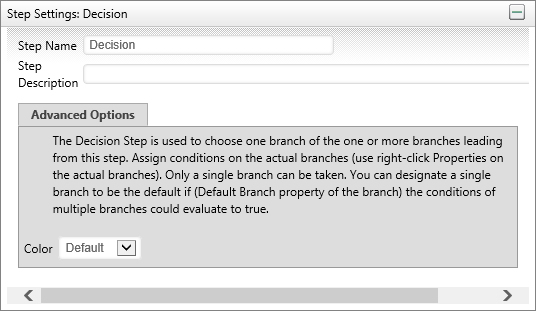
Form Actions #
The Form Options task allows the Workflow package to control which Form will be the default when multiple forms are contained within the Workflow and allows new forms to be attached.
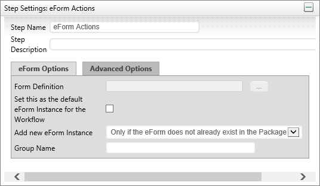
Parallel Tasks #
This allows you to run your steps in parallel. The Parallel Task Step will start all branches coming out of this step at once. You can optionally add conditions to any branches. The Wait step can be used to wait for all parallel branches to complete.
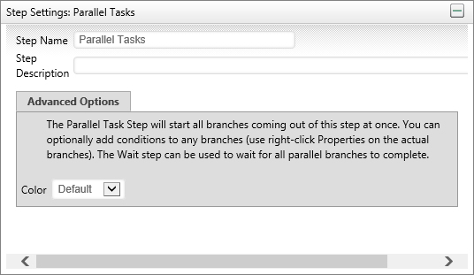
Process #
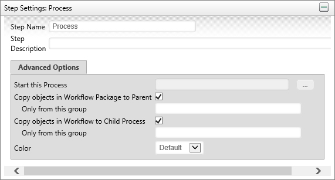
Subprocesses and End Process Steps
The Process step requires that a Workflow definition be configured. The configured process will be started as a subprocess (child process) of the main (parent) Workflow. A subprocess can consist of a Workflow or a Process Timeline. You may copy objects from the parent process to the child process and vice versa.
When a subprocess contains an End Process step, it will return the name of the End Process step as a result for the parent Process Activity. Process Timelines and Workflows use the End Process function differently, so the results can be slightly different depending on the type of subprocess that is called by the Process step.
Workflow

In the example above, the Workflow End Process step is named completed. If this Workflow runs as a subprocess, then, when the process reaches this step and completes, the name "Complete" will be passed to the parent Workflow as the result of the Process step that started the sub-process.
Workflows do NOT automatically end when an End process step is reached. Workflows end when all of the required steps in a Workflow have completed. This enables you to have two Workflow paths running concurrently, or in parallel, each of which may have its own End Process step. If a Workflow contains two parallel paths that each have a different End Process step, then, when the subprocess completes, it will return a comma-separated string containing the names of BOTH end process steps. In the parent Workflow, the returned string will then be set as the result of the Process step that started the subprocess.
Timeline
For information on how Process Timelines work in this configuration, please refer to the Results Tab section of the Process Timeline Activities topic.
Comment #
This task type is only for documenting the Workflow. It allows text to be entered that can be used to describe the Workflow process.
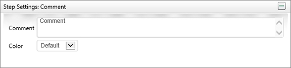
Script #
The Script task supports the ability to call custom script functions. For more information on the custom scripts refer to the Scripting section of this guide.
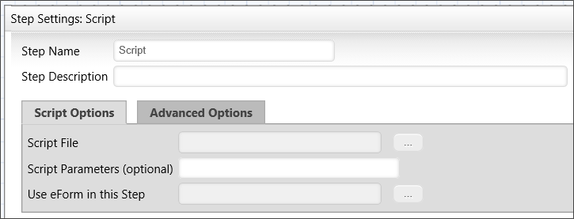
Script Options Tab
Script File
You may use the Object Picker to select a script that will automatically start when the Activity starts.
Script Parameters (optional)
You may enter a parameter string to pass to the selected script.
Use Form In this Step
This property enables a Script Step in a Workflow to specify a different Form to use a current form for the Activity. If this property isn't configured, Process Director will revert to passing the script to the current form instance that is associated with the running process.
Meta Data #
The purpose of this task is to assign Meta Data to the Workflow objects. The Meta Data is extracted from the default form instance, and can be applied to all Workflow objects, or to objects in a specific group.
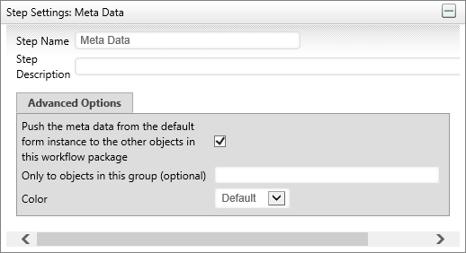
Wait #
This task will wait for certain conditions before completing (e.g. Parallel Tasks to complete, Sub-Workflows to complete, etc.). This can also be used for Workflow synchronization to synchronize events between different processes.
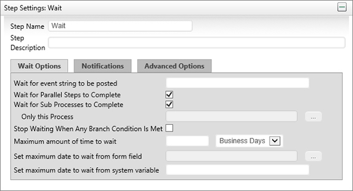
For the wait step to be satisfied these conditions must be true:
- If Wait for Parallel Steps to Complete is checked, all parallel tasks complete.
- If Wait for Sub Processes to Complete is checked, all child sub-processes (or a specific sub-process) must be complete.
- If Wait for event string to be posted is checked it will wait until that event is posted (from an external source or process).
Or
The Stop Waiting When Any Branch Condition Is Met is checked, and the condition on any branch leaving the wait task is satisfied (note: if no conditions are specified on the branch, this will cause the wait task to complete immediately).
Or
If the Set maximum date to wait from form field occurs before the wait event is satisfied the step will be canceled and it will automatically advance to the next step in the Workflow.
Or
If the time the step has waited exceeded the result of the value specified in the Set maximum date to wait from system variable field, the step will be canceled and the Workflow will automatically advance to the next step.
Custom Task #
Process Director Custom Tasks can be used as a Workflow Step. The different types of Custom Tasks appear on the left side of the Workflow definition screen, below the Built-In Tasks.
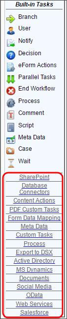
Clicking on a Custom Task Type will display the Custom Tasks of that type at the top of the sidebar. In the example below, the sidebar displays the Process Custom Tasks.
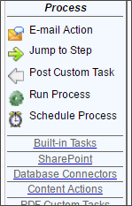
Simply drag the Custom Task onto the flowchart, just as you'd any Built-In Task. Open the properties of the Custom Task, and use the Custom Task Options tab to configure the task. On the Custom Task Options tab, click the Configure button to open the configuration screen for the task. Each Custom Task will have a specific configuration screen. For details on the configuration settings for a Custom Task, please refer to the Custom Tasks Reference Guide.